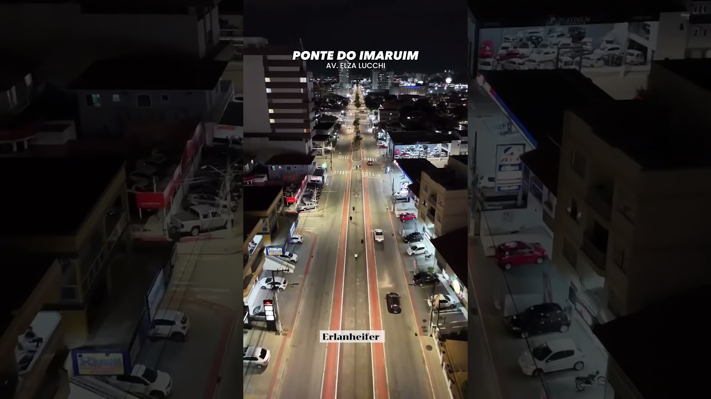
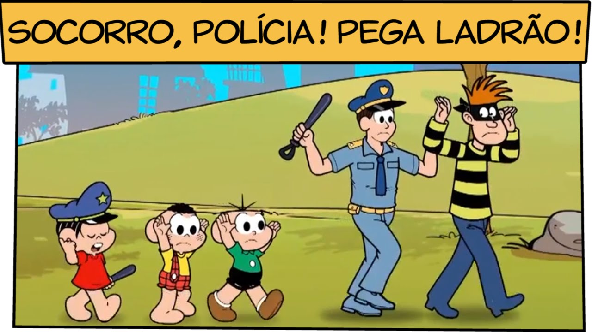

Nas avenidas da Palhoça encontramos diversos tipos de entretenimento, desde carros se aventurando em pistas até skatistas atropelando pedestres e pedestres atropelando ciclistas. Sempre é bom verificar seus bolsos, pois magicamente podem furar na avenida (entendedores entenderão). No mais, as avenidas da Palhoça são bons lugares para se visitar, porém, leve capacete e tenha curso de defesa pessoal.
As avenidas também são utilizadas como um belo meio de cuidar da saúde, pois as pessoas correm nelas. Às vezes correm por lazer, porém, por vezes correm por segurança.
Sejam bem-vindos às avenidas da Palhoça!